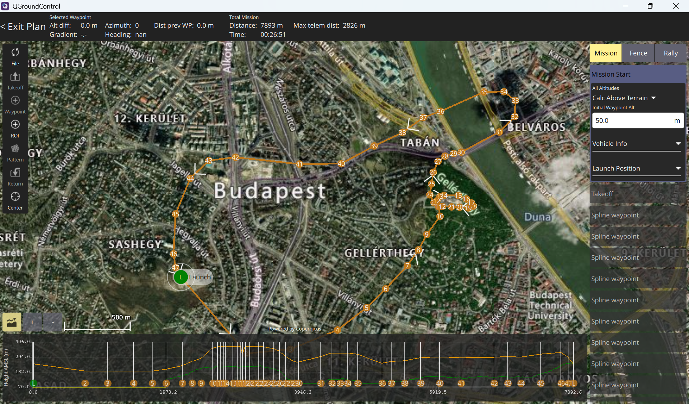
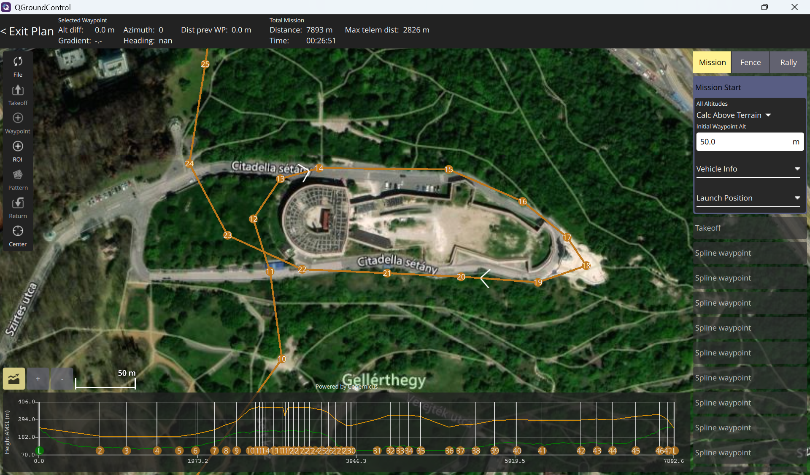
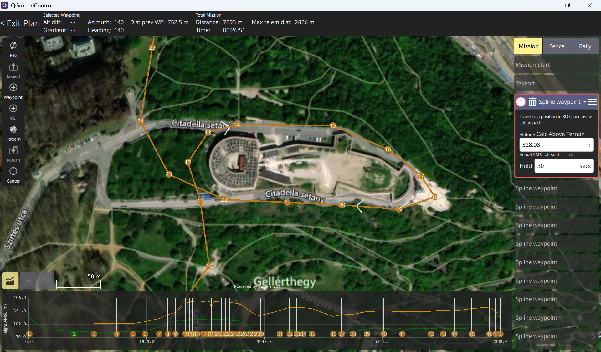
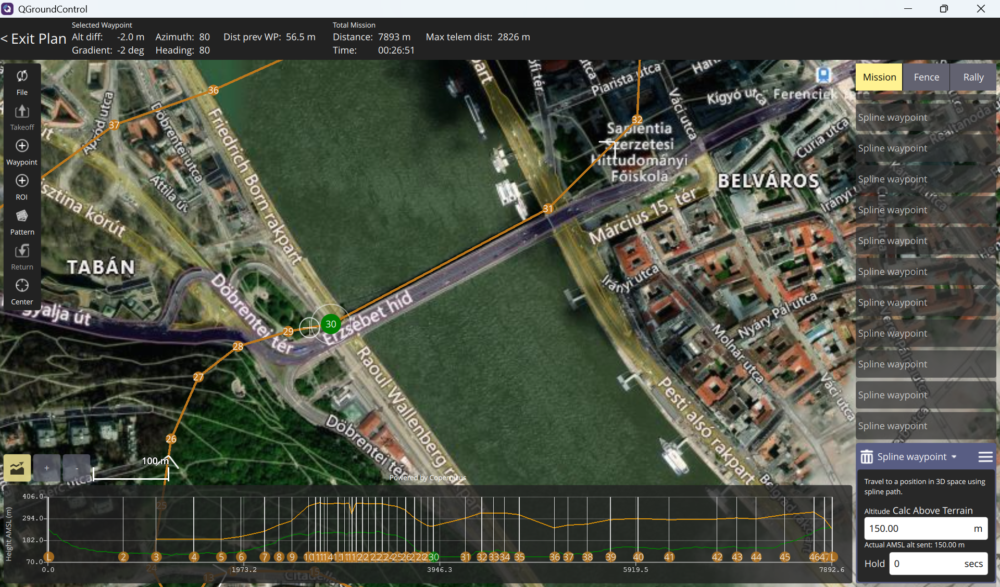
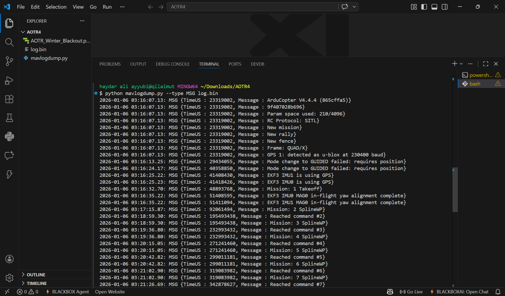
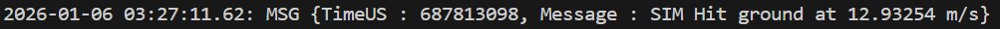
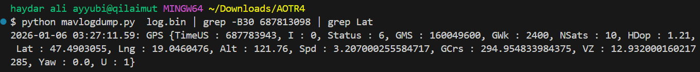
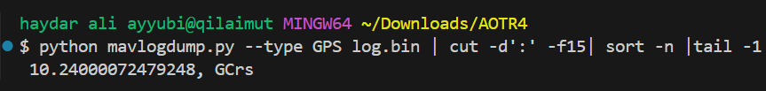
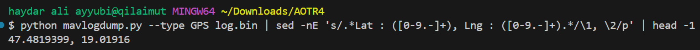

Challenge ini memberi dua artefak penting: file flight plan dan file log penerbangan. Dari keduanya, kita
bisa membaca jalur misi, menemukan event benturan, lalu mengaitkannya dengan koordinat GPS untuk menjawab
seluruh task dari awal sampai akhir.
Toolkit
Peralatan yang dipakai
QGroundControl untuk membaca file plan
mavlogdump.py untuk mengekstrak log
Record MSG dan GPS untuk validasi
Pendekatan
Mulai dari rute, lalu turun ke log
Supaya analisisnya enak diikuti, saya mulai dari screenshot QGroundControl untuk membaca konteks misi.
Setelah jalur dan waypoint-nya kebaca, baru saya pindah ke file log.bin untuk mencari
timestamp crash, posisi terakhir, dan parameter penerbangan yang diminta challenge.

01
Buka flight plan untuk memahami jalur misi dan waypoint.
02
Identifikasi landmark, titik hold, dan jalur penyeberangan sungai.
03
Baca log.bin untuk menemukan crash time, koordinat, dan statistik penerbangan.
Step by Step
Task 1 sampai Task 13
01
Task 1
How many total mission items are defined in the flight plan, including Home, Takeoff, and Land commands?
Dari tampilan flight plan, kita hitung semua item misi yang muncul di daftar rute. Karena task ini
meminta jumlah total, maka Home, Takeoff, seluruh waypoint, dan Land semuanya
harus ikut dihitung.
Tampilan rute penuh untuk melihat seluruh item misi.

Waypoint yang tersebar di jalur ini membentuk total item misi.
Jawaban49
02
Task 2
How many spline waypoints are in the mission?
Setelah total item misi diketahui, langkah berikutnya adalah memisahkan waypoint biasa dari waypoint
bertipe spline. Dari daftar mission item yang terlihat, sebagian besar rute memang dibentuk dengan spline
waypoint.
Struktur jalurnya menunjukkan sebagian besar titik memakai spline.

Detail waypoint memperkuat bahwa yang dipakai adalah spline waypoint.
Jawaban46
03
Task 3
Which landmark/building does the drone fly around during the planned route?
Dari peta di QGroundControl, area yang dikelilingi drone terlihat cukup jelas. Jalur misinya membentuk
putaran di sekitar sebuah landmark yang cukup menonjol di kawasan itu.
Bangunan yang dikelilingi rute misi tampak jelas pada area ini.
JawabanCitadella
04
Task 4
At which mission item did the drone have a planned hold/loiter?
Hold atau loiter dapat dicari dari detail mission item yang memiliki waktu tunggu. Saat salah satu titik
dibuka, terlihat ada waypoint tertentu yang memang disetel untuk berhenti sejenak.
Mission item yang memiliki hold time dapat dikenali dari panel kanan.
Jawaban18
05
Task 5
How long was the planned hold time at that mission item (seconds)?
Karena hold point-nya sudah ditemukan, durasi tunggunya bisa dibaca langsung pada properti waypoint yang
sama. Nilainya terlihat jelas di panel konfigurasi QGroundControl.
Nilai hold time tercantum langsung pada konfigurasi item misi.
Jawaban30
06
Task 6
Which bridge is the drone planned to pass by while crossing the Danube in order to reach the other part of the city? (English name)
Pada bagian rute yang menyeberangi sungai, kita bisa melihat nama jembatan yang dilalui jalur misi. Ini
menjadi penanda geografis yang cukup mudah dikenali pada peta.

Jalur misi menyeberangi sungai melalui Elisabeth Bridge.
JawabanElisabeth Bridge
07
Task 7
What is the total flight time from takeoff to crash?
Di log penerbangan, kita ambil timestamp awal misi dan timestamp saat drone crash. Selisih keduanya lalu
dibagi satu juta karena field TimeUS disimpan dalam satuan mikrodetik.

Record MSG dipakai untuk mencari awal misi dari log penerbangan.

Timestamp akhir diambil dari event SIM Hit ground saat drone menghantam tanah.
start time: 48893768
hit time: 687813098
flight time: (687813098 - 48893768) / 1000000
Jawaban00:10:38.919
08
Task 8
What is the exact log timestamp of the crash event (TimeUS)?
Saat pesan crash ditemukan, field TimeUS pada baris tersebut menjadi timestamp pasti dari
event benturan.
Timestamp crash terbaca langsung dari pesan SIM Hit ground.
Jawaban687813098
09
Task 9
What are the coordinates where the drone crashed (lat, lon)?
Setelah timestamp crash diketahui, data GPS di sekitar waktu itu bisa dipakai untuk mengambil posisi drone
ketika menghantam tanah.
Timestamp crash dipakai sebagai acuan untuk mencari record GPS yang tepat.

Koordinat crash diambil dari record GPS yang paling dekat dengan event benturan.
Jawaban47.4903055, 19.0460476
10
Task 10
What was the ground impact speed reported at the moment of crash (m/s)?
Baris crash yang sama tidak hanya memberi timestamp, tetapi juga mencantumkan nilai kecepatan tumbukan saat
drone menyentuh tanah.
Kecepatan benturan bisa dibaca langsung dari pesan event crash.
Jawaban12.93254
11
Task 11
What was the maximum GPS altitude reached during the flight (meters)?
Record GPS juga bisa difilter untuk mengambil nilai maksimum. Dari situ kita bisa mengetahui altitude
tertinggi yang sempat dicapai drone selama menjalankan misi. Screenshot di bawah menunjukkan sumber record
GPS yang dipakai, lalu nilai maksimumnya dihitung dari field altitude pada data yang sama.
Field Alt pada record GPS menjadi sumber utama untuk menghitung altitude maksimum.
Jawaban377.07
12
Task 12
What was the fastest GPS ground speed recorded (m/s)?
Dengan metode filter yang sama, kita juga bisa mengambil groundspeed maksimum. Nilai ini menunjukkan
kecepatan horizontal tercepat yang tercatat selama penerbangan.

Nilai groundspeed tercepat diambil dari hasil ekstraksi record GPS.
Jawaban10.24
13
Task 13
What are the coordinates where the drone took off from (lat, lon), and therefore a good location for the police raid to catch the gang member?
Untuk mengetahui titik takeoff, kita cukup mengambil koordinat GPS paling awal yang muncul di log. Titik
ini bisa dipakai sebagai lokasi awal penerbangan dan menjadi petunjuk penting untuk penyelidikan.

Koordinat GPS pertama pada log diambil sebagai titik lepas landas drone.
Jawaban47.4819399, 19.0191600
Ringkasan Final
Semua jawaban sudah disusun sesuai task challenge
Halaman ini sekarang terasa seperti technical writeup yang rapi. Setiap task punya bukti visual,
penjelasan singkat berbahasa Indonesia, dan jawaban final yang gampang dipindai.